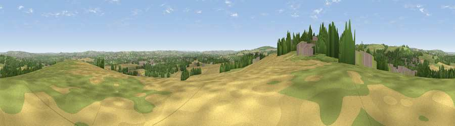

Viewpoint near Sacriston
#7804 in England · top 10% of its area beats it · near SacristonWhere it is
The exact computed spot (NZ 24825 46775). Click the marker for map links.
The view, rendered

A 360° render of this exact spot computed from the terrain model, tree cover and land cover — summer colours, afternoon light, calibrated against photographs of famous viewpoints. Real trees, hedges and buildings will differ in detail.
The panorama
Grey silhouette: terrain skyline in each direction (720 bearings, Earth curvature and refraction included). Dashed green: skyline with trees (+15 m) and buildings (+8 m) as obstacles. Blue strip: how far the ground is visible on each bearing.
Where the view opens
Wedge length = distance to the farthest visible ground on that bearing (vegetation-aware). Rings at 10, 25 and 50 km.
What fills the view
36% grassland · 27% cropland · 26% woodland · 11% built-up
Angular shares of the visible panorama (visual magnitude), not map area. Landscape diversity 0.58 (0–1 Shannon).
Key numbers
More beautiful places nearby
The staircase of upgrades: each row has a higher view potential than everything closer. Driving times are estimates from straight-line distance, calibrated against real road routing — check an actual route before setting out.
| Place | Direction | Drive | Score |
|---|---|---|---|
| Viewpoint near Edmondsley | NW · 2 km | ~6 min | 72.3 |
| Viewpoint near Edmondsley | WNW · 3 km | ~7 min | 72.6 |
| Penshaw Hill | NE · 11 km | ~22 min | 75.1 |
| Viewpoint near Sunniside | NNW · 11 km | ~22 min | 77.6 |
| Pontop Pike | WNW · 12 km | ~22 min | 77.8 |
| Viewpoint near Newton Under Roseberry | SE · 42 km | ~62 min | 78.3 |
| Viewpoint near Lazenby | SE · 43 km | ~63 min | 86.4 |
| Warsett Hill | ESE · 51 km | ~72 min | 86.8 |
54.81522, -1.61523 · source: screening · position refined by local search. Computed location — check access rights before visiting.